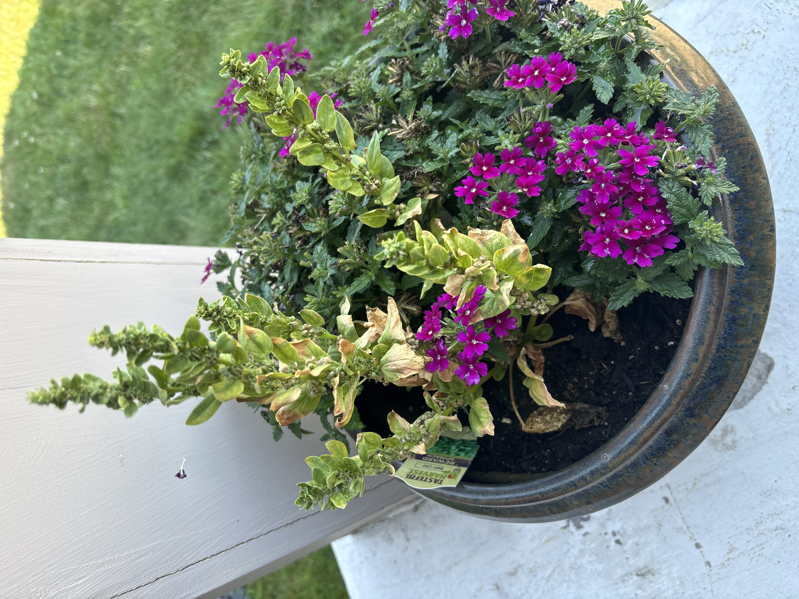
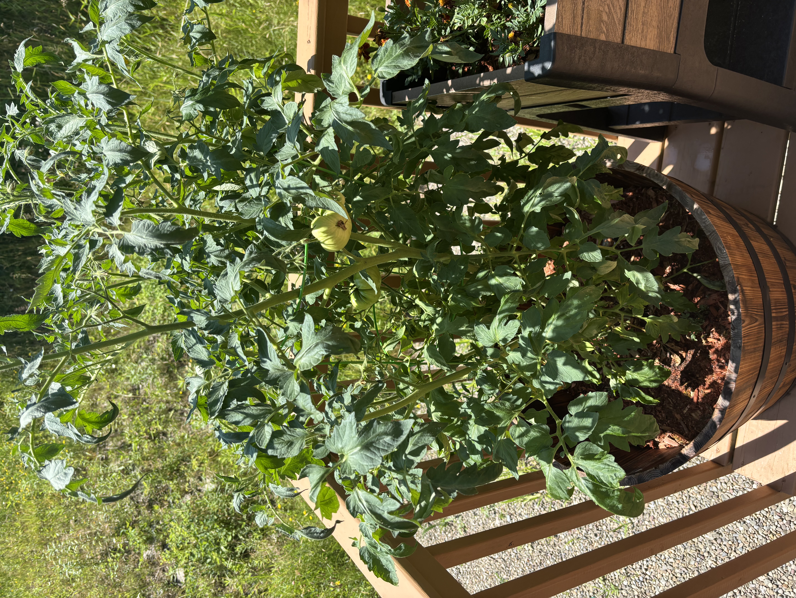
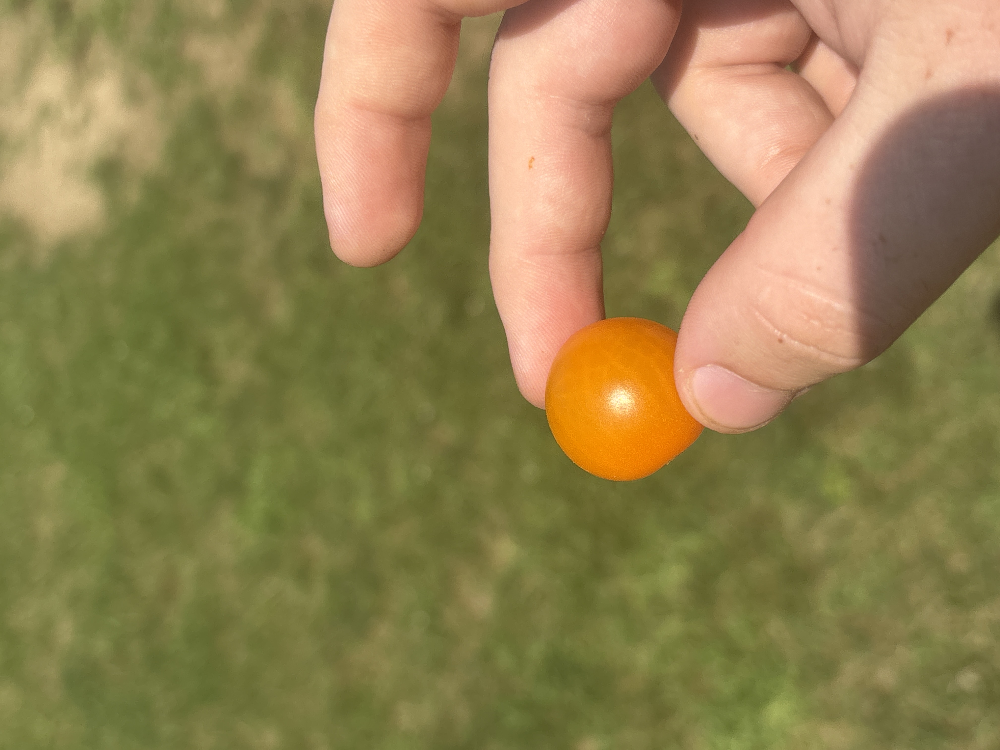
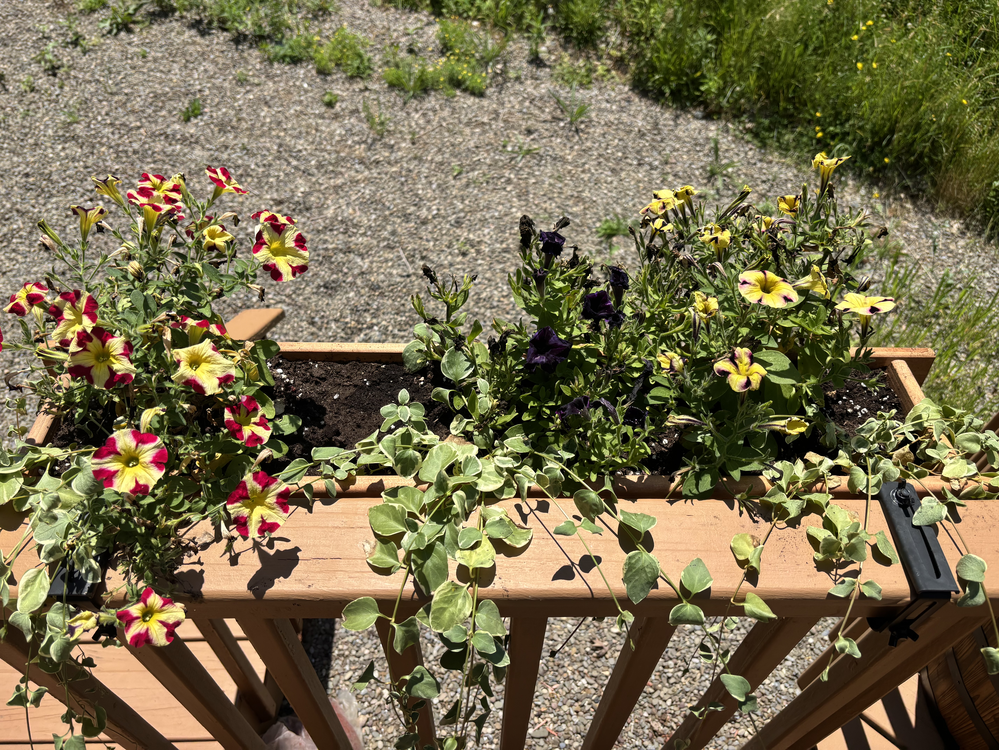
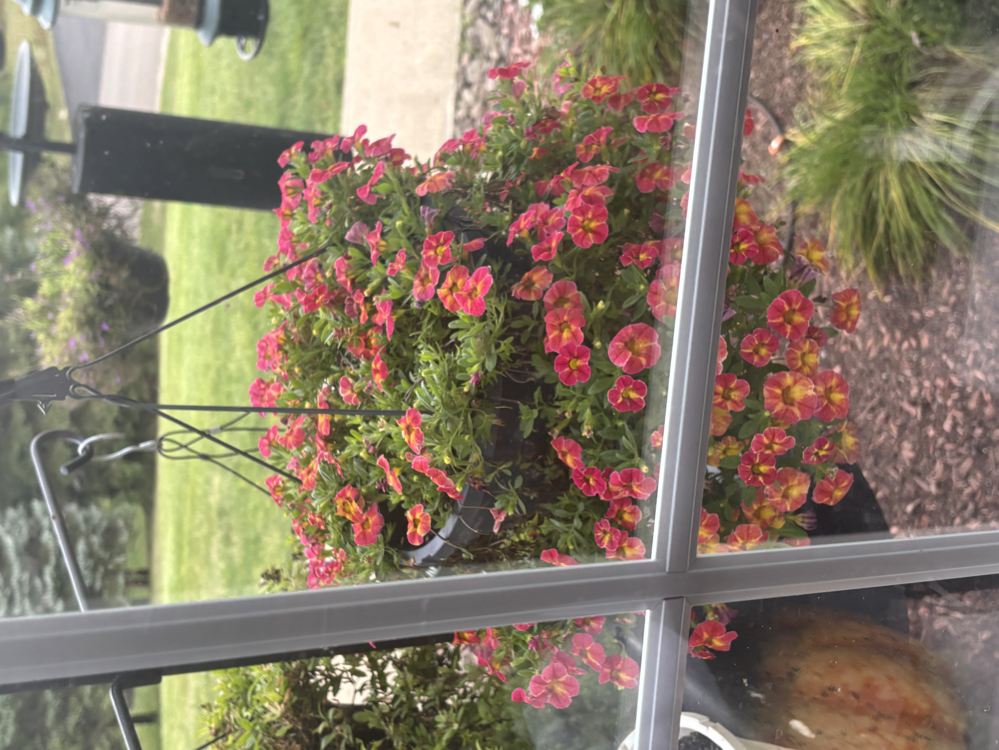
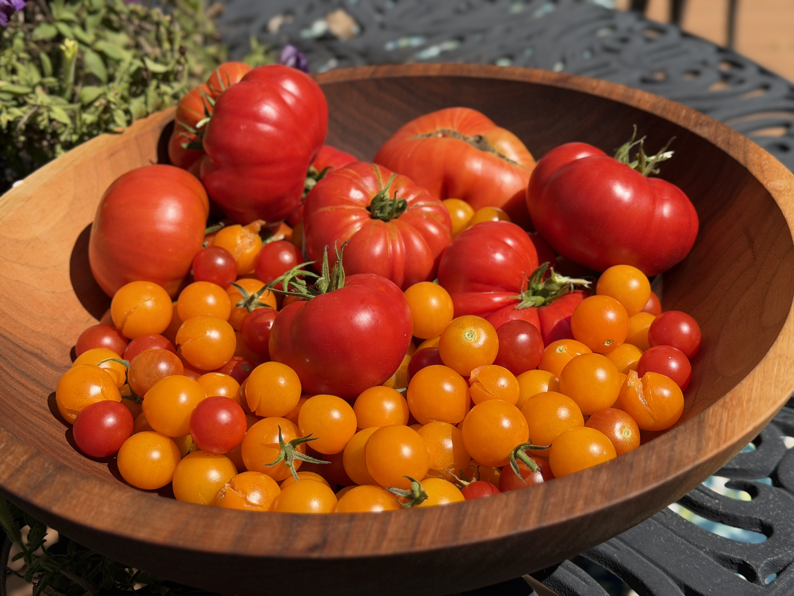
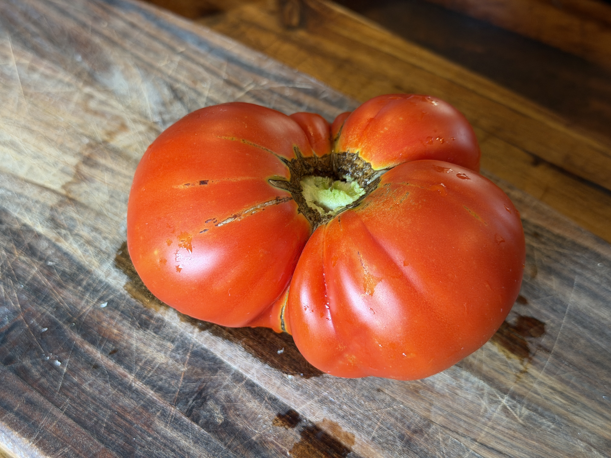
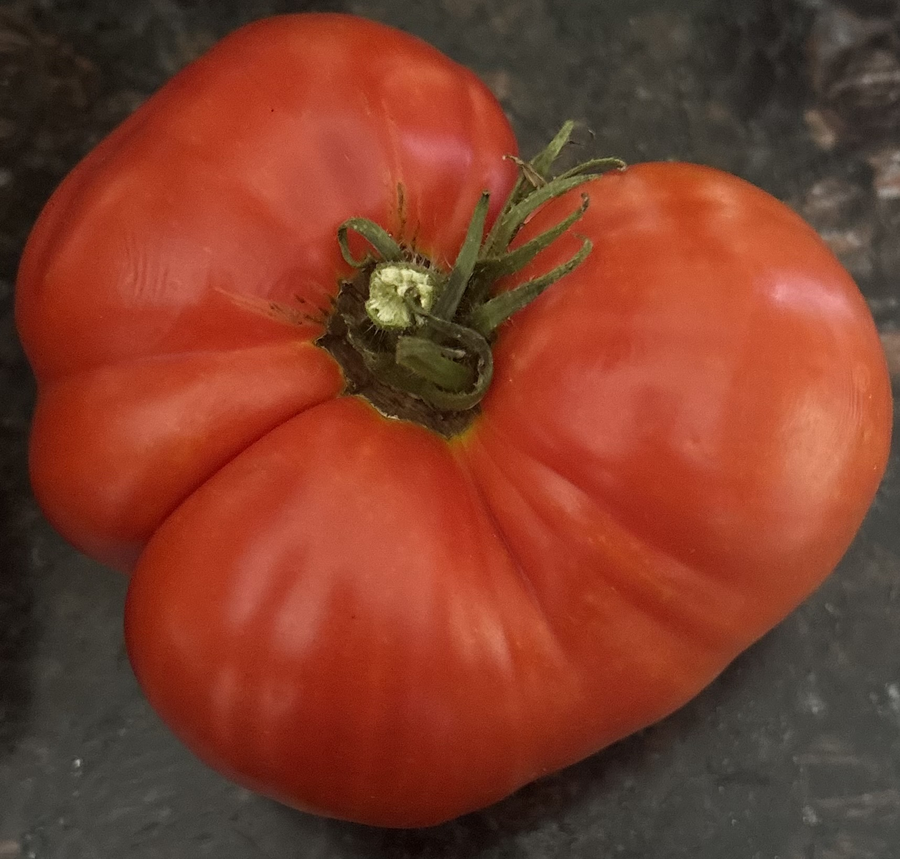

A pot of assorted flowers, picked out by my aunt

One of our two Beefmaster tomato plants, planted in a half-beer keg

A rare mutation in our Money Tree plant causing its leaf to split

Me holding one of our large cherry tomatoes

A rectangular planter with plants my dad picked out

A hanging pot of pink and yellow Calibrachoa

The fruits of my aunt and my labor, quite literally

A large Beefmaster tomato on a cutting board
A slightly smaller Beefmaster tomato on a table